3.8 Counting Multisets¶
You have in your pocket four pennies, two nickels, a dime and two quarters. You might be tempted to regard this collection as a set \(\{1, 1, 1, 1, 5, 5, 1 0, 2 5, 2 5 \}\). But this is not a valid model of your collection of change, because a set cannot have repeated elements. To overcome this difficulty, we make a new construction called a multiset. A multiset is like a set, except that elements can be repeated. We will use square brackets \([ \ ]\) instead of braces \(\{ \}\) to denote multisets. For example, your multiset of change is \(\left[ 1, 1, 1, 1, 5, 5, 1 0, 2 5, 2 5 \right]\). A multiset is a hybrid of a set and a list; in a multiset, elements can be repeated, but order does not matter. For instance
Given a multiset \(A\), its cardinality \(|A|\) is the number of elements it has, including repetition. So if \(A = [1,1,1,1,5,5,10,25,25]\), then \(|A| = 9\). The multiplicity of an element \(x \in A\) is the number of times that \(x\) appears, so \(1 \in A\) has multiplicity 4, while \(5 \in A\) and \(25 \in A\) each have multiplicity 2, and \(10 \in A\) has multiplicity 1. Notice that every set can be regarded as a multiset for which each element has multiplicity 1. In this sense we can think of \(\varnothing = \{ \} = [ \ ]\) as the multiset that has no elements.
To illustrate the idea of multisets, consider the multisets of cardinality 2 that can be made from the symbols \(\{a,b,c,d\}\). They are \([a,a] \quad [a,b] \quad [a,c] \quad [a,d] \quad [b,b] \quad [b,c] \quad [b,d] \quad [c,c] \quad [c,d] \quad [d,d]\). We have listed them so that the letters in each multiset are in alphabetical order (remember, we can order the elements of a multiset in any way we choose), and the 10 multisets are arranged in dictionary order. For multisets of cardinality 3 made from \(\{a,b,c,d\}\), we have:
{kind=link}
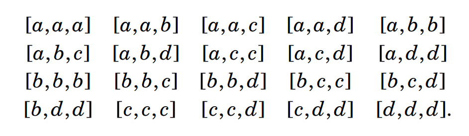
Though \(X = \{a,b,c,d\}\) has no subsets of cardinality 5, there are many multisets of cardinality 5 made from these elements, including \([a,a,a,a,a]\), \([a,a,b,c,d]\) and \([b,c,c,d,d]\), and so on. Exactly how many are there? This is the first question about multisets that we shall tackle: Given a finite set \(X\), how many cardinality-\(k\) multisets can be made from \(X\)? Let’s start by counting the cardinality-5 multisets made from symbols \(X = \{a,b,c,d\}\). (Our approach will lead to a general formula.) We know we can write any such multiset with its letters in alphabetical order. Tweaking the notation slightly, we could write any such multiset with bars separating the groupings of \(a,b,c,d\), as shown in the table below. Notice that if a symbol does not appear in the multiset, we still write the bar that would have separated it from the others.
{kind=link}
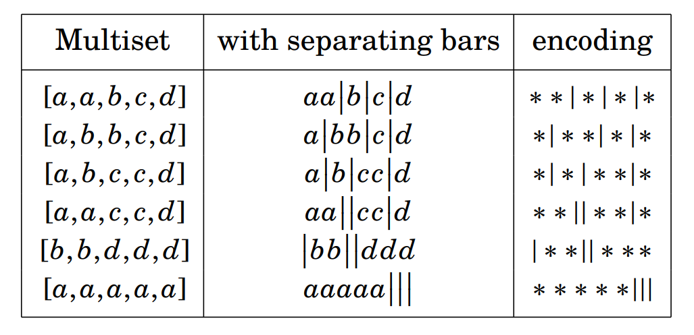
This suggests that we can encode the multisets as lists made from the two symbols \(*\) and \(|\), with an \(*\) for each element of the multiset, as follows.
{kind=link}
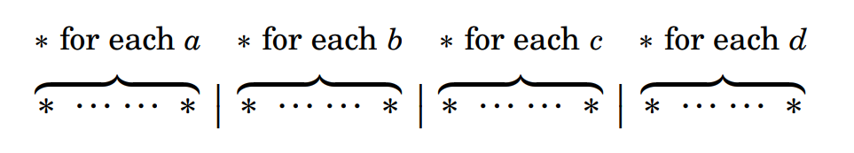
For examples see the right-hand column of the table. Any such encoding is a list made from 5 stars and 3 bars, so the list has a total of 8 entries. How many such lists are there? We can form such a list by choosing 3 of the 8 positions for the bars, and filling the remaining three positions with stars. Therefore the number of such lists is \(\displaystyle \binom{8}{3} = \dfrac{8!}{3!5!} = 56\). That is our answer. There are 56 cardinality-5 multisets that can be made from the symbols in \(X = \{a,b,c,d\}\). If we wanted to count the cardinality-3 multisets made from \(X\), then the exact same reasoning would apply, but with 3 stars instead of 5. We’d be counting the length-6 lists with 3 stars and 3 bars. There are \(\displaystyle \binom{6}{3} = \dfrac{6!}{3!3!} = 20\) such lists. So there are 20 cardinality-3 multisets made from \(X = \{a,b,c,d\}\). This agrees with our accounting on the previous page.
In general, given a set \(X = \{x_{1}, x_{2}, \ldots, x_{n}\}\) of \(n\) elements, any cardinality-\(k\) multiset made from its elements can be encoded in a star-and-bar list:
{kind=link}
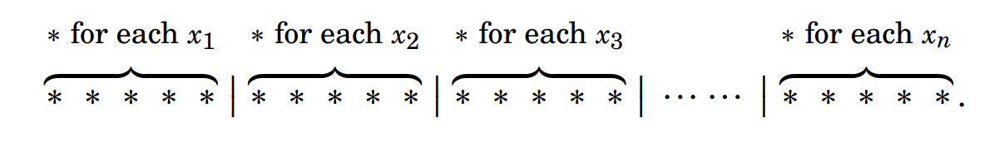
Such a list has \(k\) stars (one for each element of the multiset) and \(n-1\) separating bars (a bar between each of the \(n\) groupings of stars). Therefore its length is \(k + n - 1\). We can make such a list by selecting \(n - 1\) list positions out of \(k + n - 1\) positions for the bars and inserting stars in the left-over positions. Thus there are \(\displaystyle \binom{k+n-1}{n-1}\) such lists. Alternatively we could choose \(k\) positions for the stars and fill in the remaining \(n - k\) with bars, so there are \(\displaystyle \binom{k+n-1}{k}\) such lists. Note that \(\displaystyle \binom{k+n-1}{k} = \binom{k+n-1}{n-1}\) by Equation (3.4) on page 91. Let’s summarize our reckoning.
Fact 3.7: The number of \(k\)-element multisets that can be made from the elements of an \(n\)-element set \(X = \{x_{1}, x_{2}, \ldots, x_{n}\}\) is
This works because any cardinality-\(k\) multiset made from the \(n\) elements of \(X\) can be encoded in a star-and-bar list of length \(k + n - 1\), having form
{kind=link}
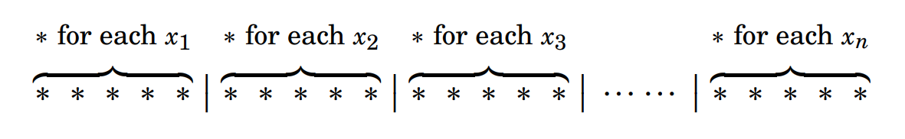
with \(k\) stars and \(n - 1\) bars separating the \(n\) groupings of stars. Such a list can be made by selecting \(n - 1\) positions for the bars, and filling the remaining positions with stars, and there are \(\displaystyle \binom{k+n-1}{n-1}\) ways to do this.
For example, the number of 2-element multisets that can be made from the 4-element set \(X = \{a,b,c,d\}\) is \(\displaystyle \binom{2+4-1}{2} = \binom{5}{2} = 10\). This agrees with our accounting of them on page 96. The number of 3-element multisets that can be made from the elements of \(X\) is \(\displaystyle \binom{3+4-1}{3} = \binom{6}{3} = 20\). Again this agrees with our list of them on page 96. The number of 1-element multisets made from \(X\) is \(\displaystyle \binom{1+4-1}{1} = \binom{4}{1} = 4\). Indeed, the four multisets are \([a], [b], [c]\) and \([d]\). The number of 0-element multisets made from \(X\) is \(\displaystyle \binom{0+4-1}{0} = \binom{3}{0} = 1\). This is right, because there is only one such multiset, namely \(\varnothing\).
Example 3.19: A bag contains 20 identical red marbles, 20 identical green marbles, and 20 identical blue marbles. You reach in and grab 20 marbles. There are many possible outcomes. You could have 11 reds, 4 greens and 5 blues. Or you could have 20 reds, 0 greens and 0 blues, etc. All together, how many outcomes are possible?
Solution: Each outcome can be thought of as a 20-element multiset made from the elements of the 3-element set \(X = \{R,G,B\}\). For example, 11 reds, 4 greens and 5 blues would correspond to the multiset \([R,R,R,R,R,R,R,R,R,R,R,G,G,G,G,B,B,B,B,B]\). The outcome consisting of 10 reds and 10 blues corresponds to the multiset \([R,R,R,R,R,R,R,R,R,R,B,B,B,B,B,B,B,B,B,B]\). Thus the total number of outcomes is the number of 20-element multisets made from the elements of the 3-element set \(X = \{R,G,B\}\). By Fact 3.7, the answer is \(\displaystyle \binom{20+3-1}{20} = \binom{22}{20} = 231\) possible outcomes.
Rather than remembering the formula in Fact 3.7, it is probably best to work out a new stars-and-bars model as needed. This is because it is often easy to see how a particular problem can be modeled with stars and bars, and once they have been set up, the formula in Fact 3.7 falls out automatically. For instance, we could solve Example 3.19 by noting that each outcome has a star-and-bar encoding using 20 stars and 2 bars. (The outcome \([R,R,R,R,R,R,R,R,R,R,R,G,G,G,G,B,B,B,B,B]\) can be encoded in stars and bars as \(* * * * * * * * * * * | * * * * | * * * * \ *\), etc.) We can form such a list by choosing 2 out of 22 slots for bars and filling the remaining 20 slots with stars. There are thus \(\displaystyle \binom{22}{2} = 231\) ways of doing this.
Our next example involves counting the number of non-negative integer solutions of the equation \(w + x + y + z = 20\). By a non-negative integer solution to the equation, we mean an assignment of non-negative integers to the variables that makes the equation true. For example, one solution is \(w = 7\), \(x = 3\), \(y = 5\), \(z = 5\). We can write this solution compactly as \((w,x,y,z) = (7,3,5,5)\) Two other solutions are \((w,x,y,z) = (1,3,1,15)\) and \((w,x,y,z) = (0,20,0,0)\). We would not include \((w,x,y,z) = (1,-1,10,10)\) as a solution because even though it satisfies the equation, the value of \(x\) is negative. How many solutions are there all together? The next example presents a way of solving this type of question.
Example 3.20: How many non-negative integer solutions does the equation \(w + x + y + z = 20\) have?
Solution: We can model a solution with stars and bars. For example, encode the solution \((w,x,y,z) = (3,4,5,8)\) as
{kind=link}
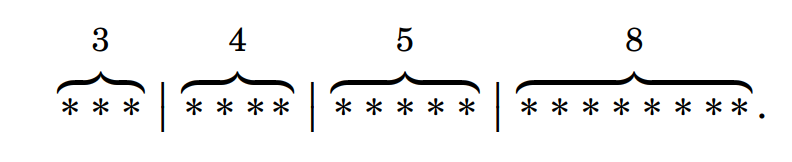
In general, any solution \((w,x,y,z) = (a,b,c,d)\) gets encoded as
{kind=link}
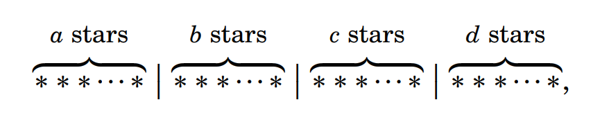
where all together there are 20 stars and 3 bars. So, for instance the solution \((w,x,y,z) = (0,0,10,10)\) gets encoded as \(| | * * * * * * * * * * | * * * * * * * * * *\), and the solution \((w,x,y,z) = (7,3,5,5)\) is encoded as \(* * * * * * * | * * * | * * * * * | * * * * *\) Thus we can describe any non-negative integer solution to the equation as a list of length \(20 + 3 = 23\) that has 20 stars and 3 bars. We can make any such list by choosing 3 out of 23 spots for the bars, and filling the remaining 20 spots with stars. The number of ways to do this is \(\displaystyle \binom{23}{3} = \dfrac{23!}{3!20!} = \dfrac{23 \cdot 22 \cdot 21}{3 \cdot 2} = 23 \cdot 11 \cdot 7 = 1771\). Thus there are 1771 non-negative integer solutions of \(w + x + y + z = 20\). For another approach to this example, model solutions of \(w + x + y + z = 20\) as 20-element multisets made from the elements of \(\{w,x,y,z\}\). For example, solution \((5,5,4,6)\) corresponds to \([w,w,w,w,w,x,x,x,x,x,y,y,y,y,z,z,z,z,z,z]\). By Fact 3.7, there are \(\displaystyle \binom{20+4-1}{20} = \binom{23}{20} = 1771\) such multisets, so this is the number of solutions to \(w + x + y + z = 20\).
Example 3.21: This problem concerns the lists \((w,x,y,z)\) of integers with the property that \(0 \leq w \leq x \leq y \leq z \leq 10\). That is, each entry is an integer between 0 and 10, and the entries are ordered from smallest to largest. For example, \((0,3,3,7)\), \((1,1,1,1)\) and \((2,3,6,9)\) have this property, but \((2,3,6,4)\) does not. How many such lists are there?
Solution: We can encode such a list with 10 stars and 4 bars, where \(w\) is the number of stars to the left of the first bar, \(x\) is the number of stars to the left of the second bar, \(y\) is the number of stars to the left of the third bar, and \(z\) is the number of stars to the left of the fourth bar. For example, \((2,3,6,9)\) is encoded as \(* * | * | * * * | * * * | *\), and \((1, 2, 3, 4)\) is encoded as \(* | * | * | * | * * * * \ *\). Here are some other examples of lists paired with their encodings.
{kind=link}
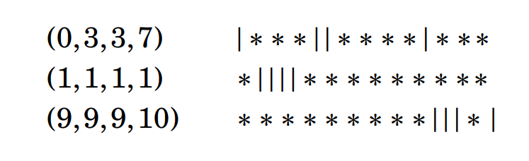
Such encodings are lists of length 14, with 10 stars and 4 bars. We can make such a list by choosing 4 of the 14 slots for the bars and filling the remaining slots with stars. The number of ways to do this is \(\displaystyle \binom{14}{4} = 1001\). Answer: There are 1001 such lists.
We will examine one more type of multiset problem. To motivate it, consider the permutations of the letters of the word “BOOK.” At first glance there are 4 letters, so we should get \(4! = 24\) permutations. But this is not quite right because two of the letters are identical. We could interchange the two \(O\)’s but still have the same permutation. To get a grip on the problem, let’s make one of the letters lower case: \(BOoK\). Now our 24 permutations are listed below in the oval.
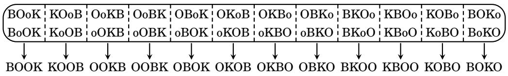
The columns in the oval correspond to the same permutation of the letters of BOOK, as indicated in the row below the oval. Thus there are actually \(\displaystyle \dfrac{4!}{2} = \dfrac{24}{2} = 12\) permutations of the letters of \(BOOK\). This is actually a problem about multisets. The letters in “BOOK” form a multiset \([B,O,O,K]\), and we have determined that there are 12 permutations of this multiset. For another motivational example, consider the permutations of the letters of the word \(BANANA\). Here there are two \(N\)’s and three \(A\)’s. Though some of the letters look identical, think of them as distinct physical objects that we can permute into different orderings. It helps to subscript the letters to emphasize that they are actually six distinct objects: \({B A}_{1}{N}_{1}{A}_{2}{N}_{2}{A}_{3}\). Now, there are \(6! = 720\) permutations of these six letters. It’s not practical to write out all of them, but we can get a sense of the problem by making a partial listing in the box below.
{kind=link}
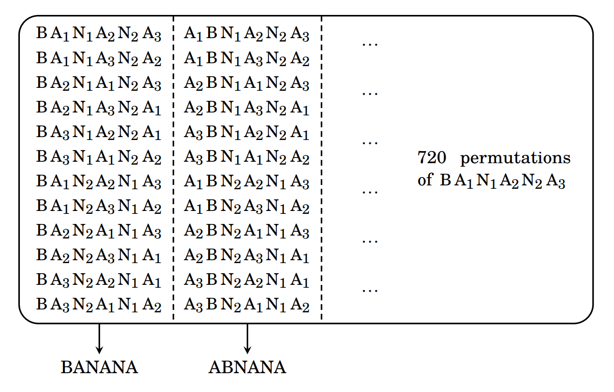
The first column lists the permutations of \({B A}_{1}{N}_{1}{A}_{2}{N}_{2}{A}_{3}\) corresponding to the word \(BANANA\). By the multiplication principle, the column has \(3!2! = 12\) permutations because the three \({A}_{i}\)’s can be permuted in \(3!\) ways within their positions, and the two \({N}_{i}\)’s can be permuted in \(2!\) ways. Similarly, the second column lists the \(3!2! = 12\) permutations corresponding to the “word” \(ABNANA\). All together there are \(6! = 720\) permutations of \({B A}_{1}{N}_{1}{A}_{2}{N}_{2}{A}_{3}\), and groupings of 12 of them correspond to particular permutations of \(BANANA\). Therefore the total number of permutations of \(BANANA\) is \(\dfrac{6!}{3!2!} = \dfrac{720}{12} = 60\). The kind of reasoning used here generalizes to the following fact.
Fact 3.8: Suppose a multiset \(A\) has \(n\) elements, with multiplicities \(p_{1}, p_{2}, \ldots, p_{k}\). Then the total number of permutations of \(A\) is \(\dfrac{n!}{p_{1}! \cdot p_{2}! \cdot \cdots \cdot p_{k}!}\).
Example 3.22: Count the permutations of the letters in \(MISSISSIPPI\).
Solution: Think of this word as an 11-element multiset with one \(M\), four \(I\)’s, four \(S\)’s and two \(P\)’s. By Fact 3.8, it has \(\displaystyle \dfrac{11!}{1! \cdot 4! \cdot 4! \cdot 2!} = 34,650\) permutations.
Example 3.23: Determine the number of permutations of the multiset \([1, 1, 1, 1, 5, 5, 10, 25, 25]\).
Solution: By Fact 3.8 the answer is \(\dfrac{9!}{4! \cdot 2! \cdot 1! \cdot 2!} = 3780\).
Exercises for Section 3.8¶
How many 10-element multisets can be made from the symbols \(\{1,2,3,4\}\)?
Answer
\(\displaystyle \binom{10+4-1}{10} = \binom{13}{10} = \binom{13}{3} = 286\).
How many 2-element multisets can be made from the 26 letters of the alphabet?
Answer
A 2-element multiset from 26 letters means: order does not matter and repetition is allowed. \(\displaystyle \binom{2+26-1}{2} = \binom{27}{2} = \binom{27}{25} = 351\).
You have a dollar in pennies, a dollar in nickels, a dollar in dimes, and a dollar in quarters. You give a friend four coins. How many ways can this be done? 🔴
Answer
In giving your friend four coins, you are giving her a 4-element multiset made from elements in \(\{1,5,10,25\}\). There are \(\displaystyle \binom{4+4-1}{4} = \binom{7}{4} = \binom{7}{3} = 35\) such multisets.
A bag contains 20 identical red balls, 20 identical blue balls, 20 identical green balls, and 20 identical white balls. You reach in and grab 15 balls. How many different outcomes are possible?
Answer
In reaching in, you are grabbing a 15-element multiset made from elements in \(\{R,G,B,W\}\). There are \(\displaystyle \binom{15+4-1}{15} = \binom{18}{15} = \binom{18}{3} = 816\) such multisets.
A bag contains 20 identical red balls, 20 identical blue balls, 20 identical green balls, and one white ball. You reach in and grab 15 balls. How many different outcomes are possible? 🔴
Answer
First we count the number of outcomes that don’t have a white ball. This is a 15-element multiset made from elements in \(\{R,G,B\}\). Modeling this with stars and bars, we are looking at length-17 lists of the form:
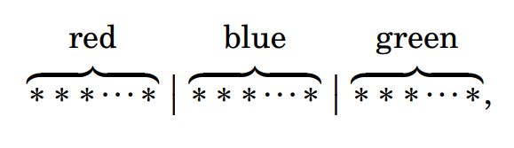
{kind=link}
A bag contains 20 identical red balls, 20 identical blue balls, 20 identical green balls, one white ball, and one black ball. You reach in and grab 20 balls. How many different outcomes are possible?
Answer
Note that black and white can each occur only 0 or 1 time. First we count the number of outcomes that don’t have a white ball AND don’t have a black ball. This is a 20-element multiset made from elements in \(\{R,G,B\}\). There are \(\displaystyle \binom{20+3-1}{20} = \binom{22}{20}\) outcomes without the white ball AND without the black ball. Next we count the number of outcomes that have a white ball, but no black ball. Then there are 19 remaining balls in the grab. There are \(\displaystyle \binom{19+3-1}{19} = \binom{21}{19}\) outcomes with the white ball, but without the black ball. Next we count the number of outcomes that have a black ball, but no white ball. Then there are 19 remaining balls in the grab. There are \(\displaystyle \binom{19+3-1}{19} = \binom{21}{19}\) outcomes with the black ball, but without the white ball. Next we count the number of outcomes that have both a white ball AND a black ball. Then there are 18 remaining balls in the grab. There are \(\displaystyle \binom{18+3-1}{18} = \binom{20}{18}\) outcomes with both the white ball AND the black ball. Finally, by the addition principle, the answer to the question is \(\displaystyle \binom{22}{20} + \binom{21}{19} + \binom{21}{19} + \binom{20}{18} = 231 + 210 + 210 + 190 = 841\).
In how many ways can you place 20 identical balls into five different boxes?
Answer
Let’s model this with stars and bars. Doing this we get a list of length 24 with 20 stars and 4 bars, where the first grouping of stars has as many stars as balls in Box 1, the second grouping has as many stars as balls in Box 2, and so on.
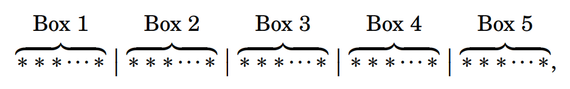
{kind=link}
How many lists \(( x , y , z )\) of three integers are there with \(0 \leq x \leq y \leq z \leq 100\)? 🔴
Answer
Note that since \(0 \leq x \leq y \leq z \leq 100\), the triple \(( x , y , z )\) is equivalent to choosing 3 numbers from \(\{0,1,2, \ldots, 100\}\) with repetition and in non-decreasing order. There are 101 possible values total (including 0!). So the number of such triples is \(\displaystyle \binom{101 + 3 - 1}{3} = \binom{103}{3} = \binom{103}{100} = 176,851\)
A bag contains 50 pennies, 50 nickels, 50 dimes and 50 quarters. You reach in and grab 30 coins. How many different outcomes are possible?
Answer
This is a 30-element multiset made from elements in \(\{1,5,10,25\}\). The stars-and-bars model is
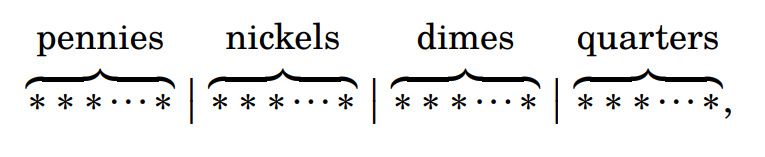
{kind=link}
How many non-negative integer solutions does \(u + v + w + x + y + z = 90\) have?
Answer
Model solutions of \(u + v + w + x + y + z = 90\) as 90-element multisets made from the elements of \(\{u,v,w,x,y,z\}\). There are \(\displaystyle \binom{90+6-1}{90} = \binom{95}{90} = \binom{95}{5} = 57,940,519\) such multisets, so this is the number of solutions to \(u + v + w + x + y + z = 90\).
How many integer solutions does the equation \(w + x + y + z = 100\) have if \(w \geq 4\), \(x \ge 2\), \(y \ge 0\) and \(z \geq 0\)?
Answer
Imagine a bag containing 100 red balls, 100 blue balls, 100 green balls and 100 white balls. Each solution of the equation corresponds to an outcome in selecting 100 balls from the bag, where the selection includes \(w \geq 4\) red balls, \(x \geq 2\) blue balls, \(y \geq 0\) green balls and \(z \geq 0\) white balls.
Now let’s consider making such a selection. Pre-select 4 red balls and 2 blue balls, so 94 balls remain in the bag. Next the remaining 94 balls are selected. We can calculate the number of ways that this selection can be made with stars and bars, where there are 94 stars and 3 bars, so the list’s length is 97.
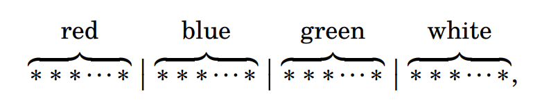
{kind=link}
How many integer solutions does the equation \(w + x + y + z = 100\) have if \(w \ge 7\), \(x \geq 0\), \(y \ge 5\) and \(z \geq 4\)?
Answer
Model solutions of \(w + x + y + z = 100\) as 100-element multisets made from the elements of \(\{w,x,y,z\}\). We can rewrite the constraints by removing the minimum required amounts: \(w' = w-7,\quad x'=x,\quad y'=y-5,\quad z'=z-4\). Then \(w + x + y + z = (w'+7)+x'+(y'+5)+(z'+4) = 100\), so \(w'+x'+y'+z' = 100-(7+5+4)=84\). Non-negative integer solutions of \(w'+x'+y'+z' = 84\) can be modeled as 84-element multisets made from the elements of \(\{w',x',y',z'\}\). The number of outcomes is thus \(\displaystyle \binom{100-16 + 4-1}{100-16} = \binom{87}{84} = \binom{87}{3} = 105,995\).
How many length-6 lists can be made from the symbols \(\{A,B,C,D,E,F,G\}\), if repetition is allowed and the list is in alphabetical order? (Examples: \(BBCEGG\), but not \(BBBAGG\).)
Answer
Any such list corresponds to a 6-element multiset made from the symbols \(\{A,B,C,D,E,F,G\}\). For example, the list \(AACDDG\) corresponds to the multiset \([A,A,C,D,D,G]\). Thus the number of lists equals the number of multisets, which is \(\displaystyle \binom{6+7-1}{6} = \binom{12}{6} = 924\).
Note that a multiset only records how many copies of each symbol you chose, not the order. For example, suppose your multiset is: \(\{A,A,C,D,D,G\}\), then this corresponds to: 2 As, 1 C, 2 D’s, 1 G. Since the problem requires the list to be in alphabetical order, there is only one possible arrangement of those symbols: AACDDG. You cannot write: DACADG because that is not alphabetical. So each multiset gives exactly one valid alphabetical list and each valid alphabetical list comes from exactly one multiset. This is a perfect one-to-one correspondence.
How many permutations are there of the letters in the word “\(PEPPERMINT\)”?
Answer
By Fact 3.8: Suppose a multiset \(A\) has \(n\) elements, with multiplicities \(p_{1}, p_{2}, \ldots, p_{k}\), then the total number of permutations of \(A\) is \(\dfrac{n!}{p_{1}! \cdot p_{2}! \cdot \cdots \cdot p_{k}!}\). The answer is \(\displaystyle \frac{10!}{1! \cdot 1! \cdot 1! \cdot 1! \cdot 1! \cdot 2! \cdot 3!} = 302,400\).
How many permutations are there of the letters in the word “\(TENNESSEE\)”?
Answer
By Fact 3.8: Suppose a multiset \(A\) has \(n\) elements, with multiplicities \(p_{1}, p_{2}, \ldots, p_{k}\), then the total number of permutations of \(A\) is \(\dfrac{n!}{p_{1}! \cdot p_{2}! \cdot \cdots \cdot p_{k}!}\). The answer is \(\displaystyle \frac{9!}{1! \cdot 2! \cdot 2! \cdot 4!} = 3,780\).
A community in Canada’s Northwest Territories is known in the local language as “\(TUKTUYAAQTUUQ\).” How many permutations does this name have?
Answer
By Fact 3.8: Suppose a multiset \(A\) has \(n\) elements, with multiplicities \(p_{1}, p_{2}, \ldots, p_{k}\), then the total number of permutations of \(A\) is \(\dfrac{n!}{p_{1}! \cdot p_{2}! \cdot \cdots \cdot p_{k}!}\). The answer is \(\displaystyle \frac{13!}{1! \cdot 1! \cdot 2! \cdot 2! \cdot 3! \cdot 4!} = 10,810,800\).
You roll a dice six times in a row. How many possible outcomes are there that have two 1’s three 5’s and one 6?
Answer
This is the number of permutations of the “word” ⚀⚀⚄⚄⚄⚅. By Fact 3.8: Suppose a multiset \(A\) has \(n\) elements, with multiplicities \(p_{1}, p_{2}, \ldots, p_{k}\), then the total number of permutations of \(A\) is \(\dfrac{n!}{p_{1}! \cdot p_{2}! \cdot \cdots \cdot p_{k}!}\). The answer is \(\displaystyle \frac{6!}{2! \cdot 3! \cdot 1!} = 60\).
Flip a coin ten times in a row. How many outcomes have 3 heads and 7 tails?
Answer
This is the number of permutations of the “word” HHHTTTTTTT.
By Fact 3.8: Suppose a multiset \(A\) has \(n\) elements, with multiplicities \(p_{1}, p_{2}, \ldots, p_{k}\), then the total number of permutations of \(A\) is \(\dfrac{n!}{p_{1}! \cdot p_{2}! \cdot \cdots \cdot p_{k}!}\).
The answer is \(\displaystyle \frac{10!}{3! \cdot 7!} = 120\).
In how many ways can you place 15 identical balls into 20 different boxes if each box can hold at most one ball? 🔴
Answer
Regard each such distribution as a binary string of length 20, where there is a 1 in the \(i\)th position precisely if the \(i\)th box contains a ball (and zeros elsewhere). The answer is the number of permutations of such a string, for example: 11111111111111100000.
By Fact 3.8: Suppose a multiset \(A\) has \(n\) elements, with multiplicities \(p_{1}, p_{2}, \ldots, p_{k}\), then the total number of permutations of \(A\) is \(\dfrac{n!}{p_{1}! \cdot p_{2}! \cdot \cdots \cdot p_{k}!}\).
The answer is \(\displaystyle \frac{20!}{15! \cdot 5!} = 15,504\).
Alternatively, the answer is the number of ways to choose 15 positions out of 20, which is \(\displaystyle \binom{20}{15} = 15,504\).
You distribute 25 identical pieces of candy among five children. In how many ways can this be done?
Answer
We are distributing 25 identical candies among 5 distinct children. Let \(x_1+x_2+x_3+x_4+x_5=25\), where \(x_i\ge 0\) and \(x_i\) = number of candies child \(i\) receives. So we are counting the number of nonnegative integer solutions to this equation. There are \(\displaystyle \binom{25+5-1}{25} = \binom{29}{25} = \binom{29}{4} = 23,751\) such ways.
How many numbers between 10,000 and 99,999 contain one or more of the digits 3, 4 and 8, but no others? 🔴
Answer
First count the numbers that have three 3’s, one 4, and one 8, like 33348.
By Fact 3.8: Suppose a multiset \(A\) has \(n\) elements, with multiplicities \(p_{1}, p_{2}, \ldots, p_{k}\), then the total number of permutations of \(A\) is \(\dfrac{n!}{p_{1}! \cdot p_{2}! \cdot \cdots \cdot p_{k}!}\).
The number of permutations of this “word” is \(\displaystyle \frac{5!}{3! \cdot 1! \cdot 1!} = 20\). By the same reasoning there are 20 numbers that contain three 4’s, one 3, and one 8 (like 44438), and 20 numbers that contain three 8’s, one 3, and one 4 (like 88834).
Next, consider the numbers that have two 3’s, two 4’s and one 8, like 33448. The number of permutations of this “word” is \(\displaystyle \frac{5!}{2! \cdot 2! \cdot 1!} = 30\). By the same reasoning there are 30 numbers that contain two 3’s, two 8’s and one 4 (like 33884), and 30 numbers that contain two 4’s, two 8’s and one 3 (like 44883). This exhausts all possibilities.
By the addition principle the answer is \(20+20+20+30+30+30=150\).